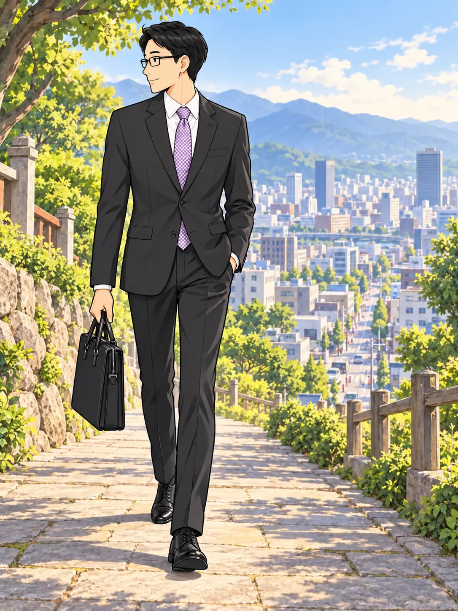
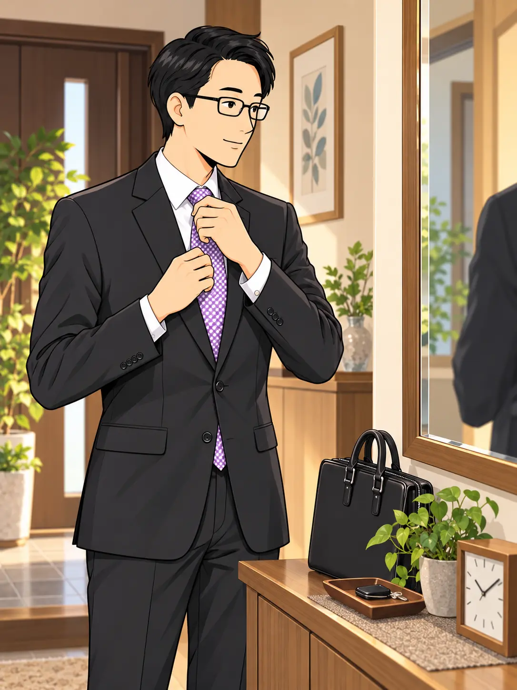
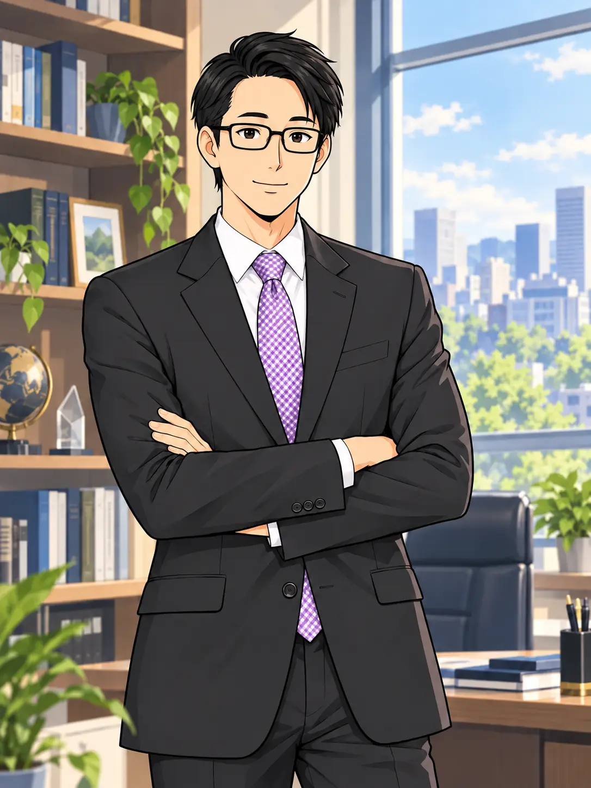
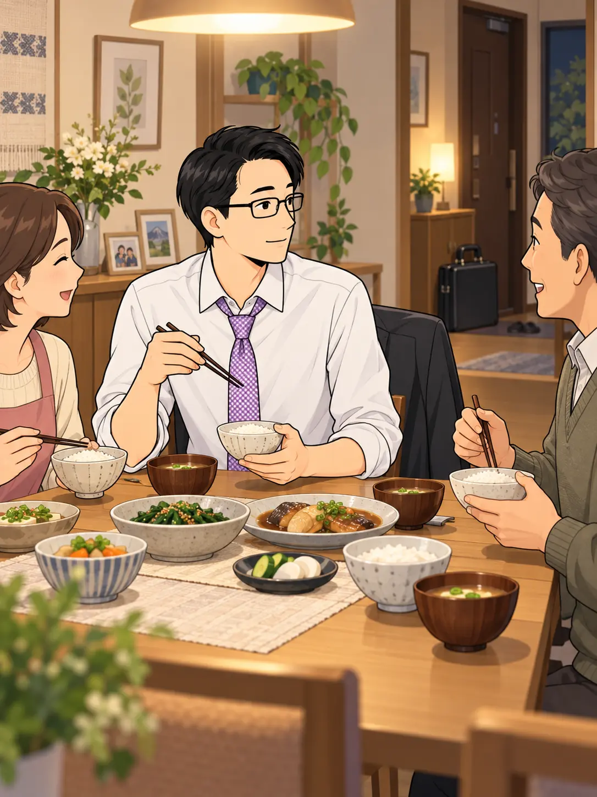
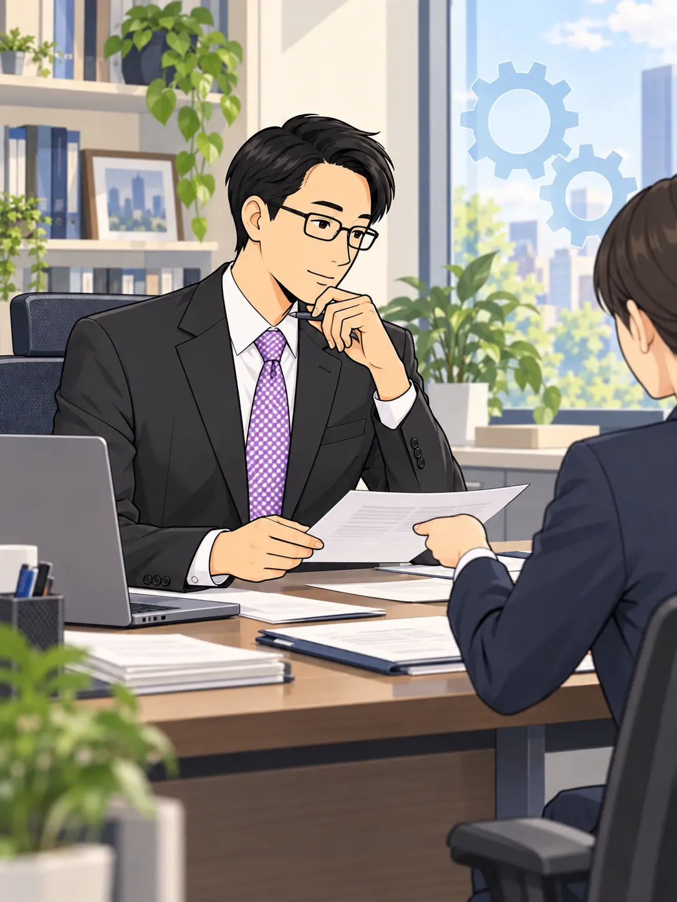

深い気づきを得た、その先で。
空不動先生が選んだのは、
現実社会の中で生きる道だった。

山に籠もり、
教祖になる道は選ばない。
会社も、家庭も、人との関わりも。
そのすべてが、これからの舞台になる。
白いシャツに袖を通し、
ネクタイを締める。

雲の上から
綺麗な言葉を説くだけでは、
何の意味がある！
求めるのは、
この現実の中で生きる真理だ。
経営者として、
目の前の課題と人に向き合う。
現実の人間社会こそ、
本当の修行場だ。
会社を経営し、社員を守る！
経済活動の中で、
真理を証しして見せる。
その姿勢は、
語る言葉にも、はっきり表れていた。

私は宗教家ではない。
だいいち、宗教が大嫌いだ！
現実世界で役に立たない真理など、
ただの綺麗ごとに過ぎない。
仕事を終えれば、
食卓を囲み、人の話に耳を傾ける。

仕事、人間関係、家庭……。
この泥臭い現実の中でこそ、
《超越人格》の愛を体現する。
大切なのは、
いちばん身近な暮らしの中にある。
気づきを、日々の仕事へ。
ひとつひとつの判断と行動へ。

真理を、言葉で終わらせない。
目の前の仕事で、
実際に役立てていく。
原案では、その実践が
企業や事業の成果にも
つながっていったと描かれている。
そして、その問いは
私たちの日常へと向けられる。

特別な場所へ行かなくてもいい。
あなたが今いる「その現実」が、
人間をやりなおす舞台なのだ！
今いる場所で、
今日の人との関わりから。
帰還の道は、暮らしの中へと続く。